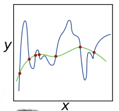
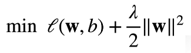

Pytorch深度学习-第五节：网络的优化
误差
- 训练误差：模型在训练数据上的误差
- 泛化误差：模型在新数据上的误差
数据集
数据集分类
- 训练集：用来训练模型参数
- 验证集：用来评估模型质量，然后选择效果最好的参数。和训练集并不一样
- 测试集：只用一次，用来评估最终结果
K-则交叉验证
在没有足够多数据使用时（经常会出现这种情况），可以如下操作：
- 将训练数据分割成K块
- For i = 1,…,K：
- 使用第i块作为验证集，其余作为训练集
- 报告K个验证集误差的平均值
K通常取5或10。
过拟合与欠拟合
- 过拟合：模型的训练误差低，泛化误差大
- 欠拟合：模型的训练误差和泛化误差都很大，且差距较小
一般来说，拟合情况主要和数据的复杂度和模型容量相关。
我们无法改变数据的复杂度，因此只能调整模型的容量。过高的模型容量会造成过拟合，而过低的模型容量又会引起欠拟合，因此我们要在两者之间找一个平衡点。
过拟合的处理方式
权重衰退：$L_2$正则化
如果模型过于复杂，也可以通过减小权重的大小来降低复杂度，从而避免过拟合。

我们可以在目标函数后加入$L_2$范数来控制权重$w$的大小，使目标函数变为：

这样，在损失函数和均方误差的双重作用下，$w$会在两者之间取一个平衡值，使损失函数不会过大的同时，自身的值也不会过大。
由于加入$L_2$正则化后，$w$的更新变为下式，可以很明显看出数值有所减小，因此称为权重衰退。
正则可以理解为不要让权重的范围太大。
丢弃法
一个良好的模型需要对输入数据的扰动具有良好的鲁棒性，而丢弃法就是在神经网络的层之间加入噪音，从而使模型更具普适性。
丢弃法对每个元素做如下扰动：
通常将丢弃法作用在隐藏全连接层的输出上。
但是在推理时并不使用丢弃法。
---------------------本文结束---------------------